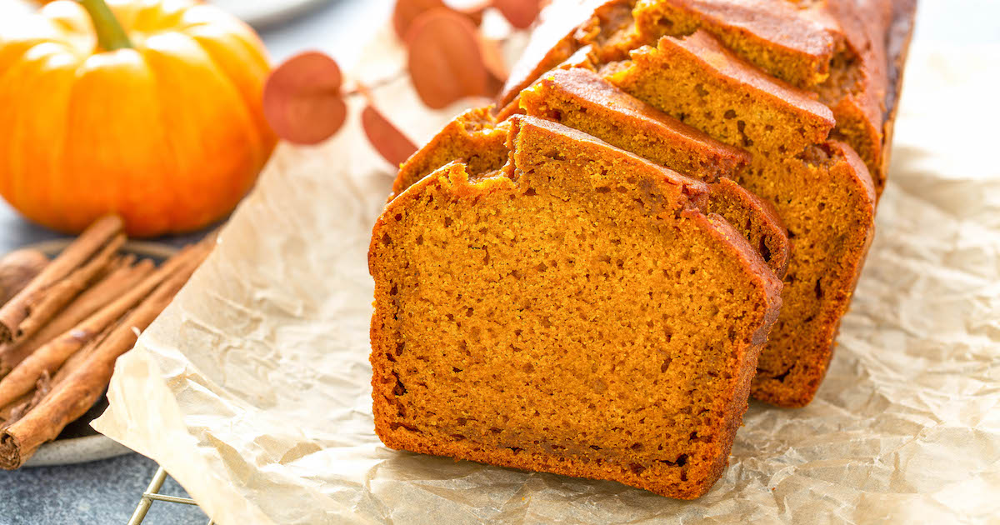

Pumpkin Bread Recipe

Ingredients
- 1 can 14oz pumkin puree
- 2 cups of sugar
- 3/4 cup of butter
- 1 teaspoon of vanilla extract
- 1/2 teaspoon of salt
- 1 teaspoon of cinnamon
- 1 teaspoon of baking soda
- 1/2 teaspoon baking powder
- 2 cups flour
Instructions
- Preheat overn to 325F.
- Grease baking pan with butter and flour.
- Mix the pumpkin, sugar, butter and vanilla.
- Add in the salt, cinnamon, baking soda and baking powder.
- Add the flour slowly and mix until combined and smooth.
- Bake for 65-75 minutes.
contact me
email
THANKS FOR BAKING!